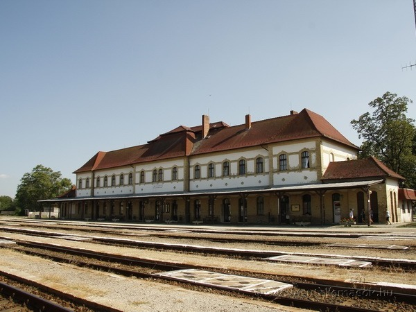

Warum lohnt sich ein Besuch in Bátaszék?
Bátaszék ist ein wichtiger Eisenbahnknotenpunkt in Südtransdanubien. Hier treffen die Strecken Pécs–Baja und Szekszárd–Villány zusammen, deshalb ist der Ort ein guter Ausgangspunkt für Ausflüge in die Landschaften und Weinregionen der Umgebung.
